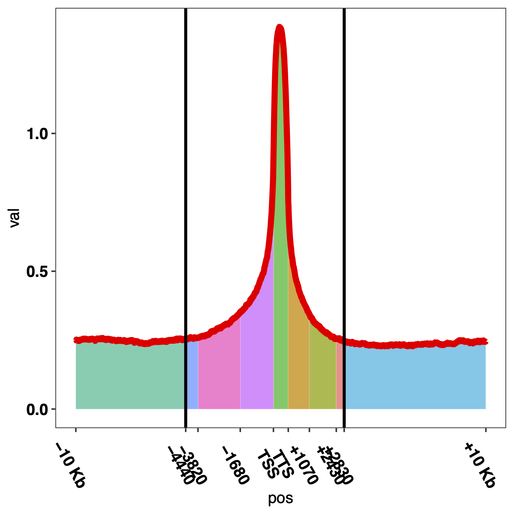
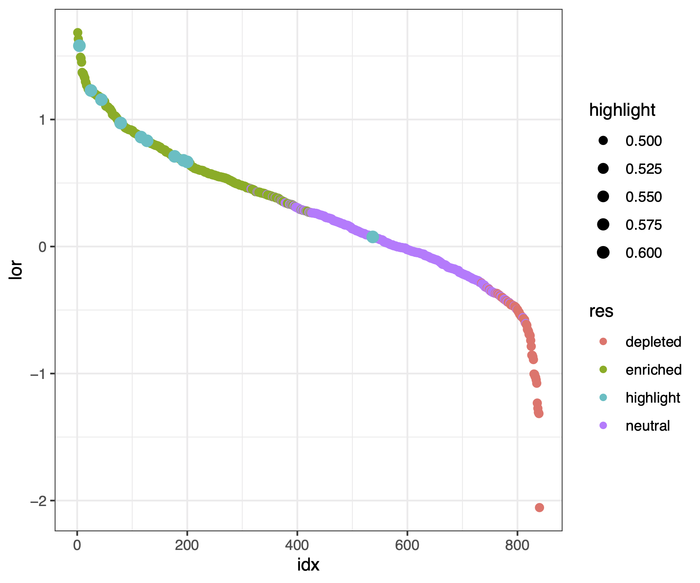
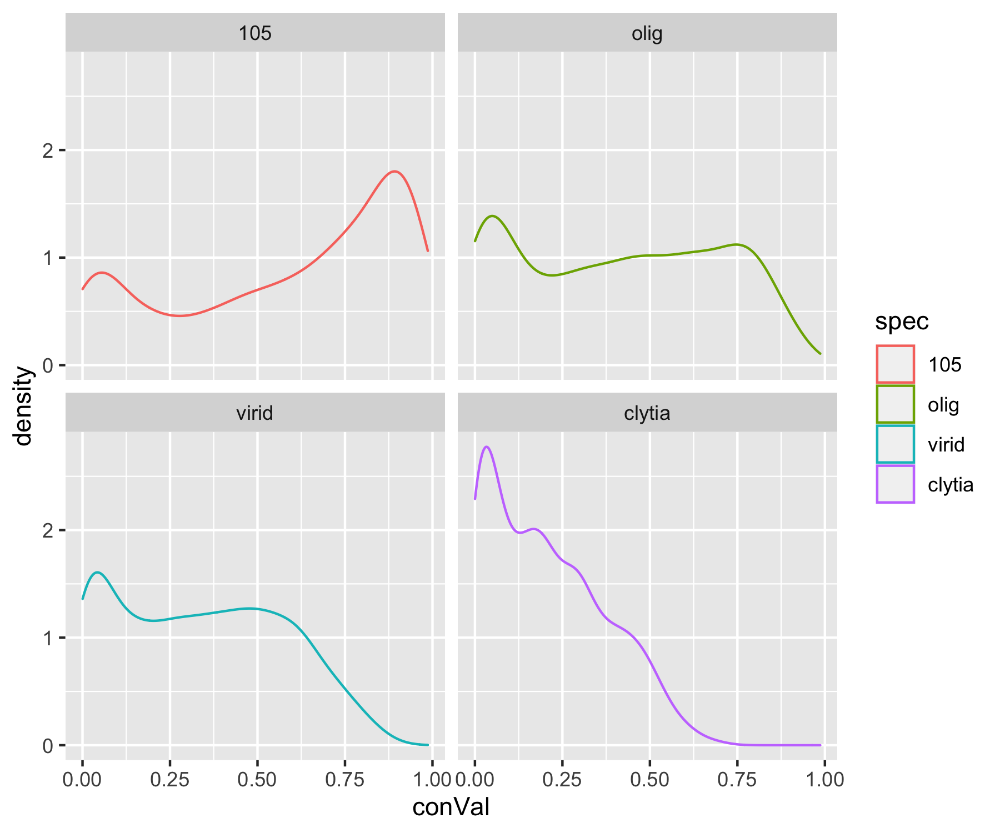
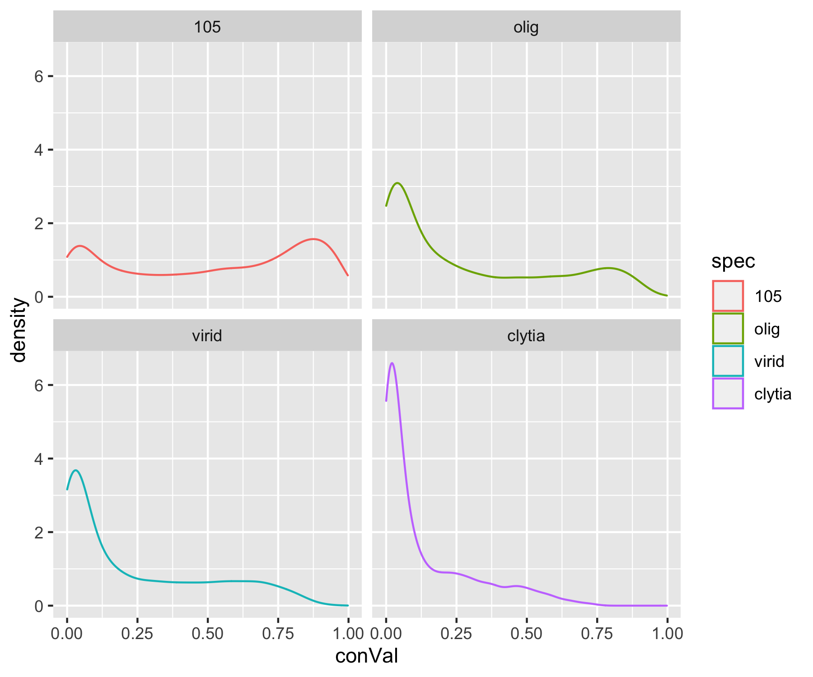
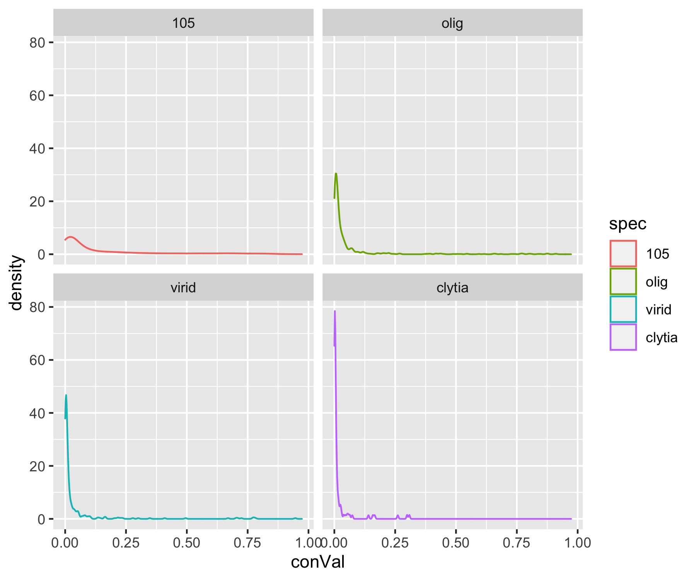
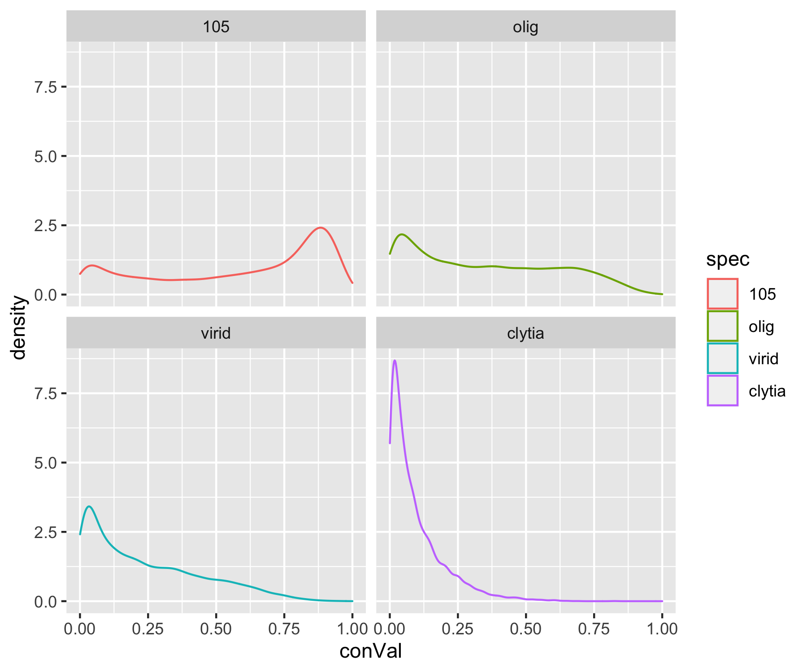
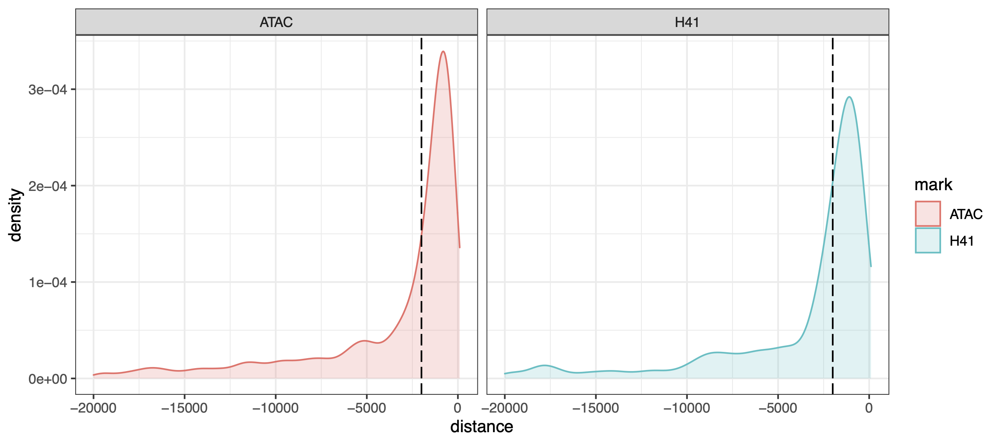

This document covers our approach to analyzing sequence conservation in the strain AEP H. vulgaris genome assembly. This process entailed collecting and prepping five hydrozoan genomes, aligning them with the progressive cactus whole-genome alignment pipeline, generating sequence conservation data tracks, and identifying conserved transcription factor binding motifs and cis-regulatory elements.
Characterizing Hydra Genome Sequence ConservationPrepping Input Sequences for AlignmentMasking Repeats in the H. oligactis AssemblyGenerating a Cross-Species Whole-Genome AlignmentGenerating AEP Genome Conservation Data TracksCalculating Conservation Patterns Near GenesIdentifying Conserved Transcription Factor Binding Sites in the AEP GenomePredicting Conserved Binding Sites Using JASPAR Motif SequencesGenerating a Control Motif Dataset Using Shuffled JASPAR MotifsIdentifying Conserved Motifs and Comparing Conservation Rates of Different Motif SequencesIdentifying Conserved Cis-Regulatory ElementsFiles Associated with This Document
Repetitive regions are intrinsically difficult to align. Therefore, softmasking repeats in the genomes being aligned can improve results. Softmasking prevents a region from seeding alignments, but allows alignments to extend into the masked region. We had already masked the AEP assembly as part of our annotation pipeline (see 02_repeatMasking.md for details). During that analysis we had also generated a repeat masked version of the strain 105 genome. In addition, softmasked versions of the Clytia and H. viridissima genomes were already available. For Clytia we used the file Clytia_hemisphaerica_gca902728285.GCA902728285v1.dna_sm.toplevel.fa.gz (available for download here), which we renamed to clytia.fa. For H. viridissima we used the file hvir_genome_hm2_250116_renamed.fa (available for download here), which we renamed to virid.fa.
When the whole-genome alignment was performed, we had not yet generated oligactis specific repeat libraries for masking repeats (described in 02_repeatMasking.md). We therefore simply used a combination of the strain AEP H. vulgaris repeatmodeler and Dfam eumetazoa repeat family libraries. Using this approach resulted in some repetitive regions going unmasked. Nonetheless, we were still able to capture the majority of the repetitive sequence in the oligactis genome.
To identify and mask repeats in oligactis, we first ran repeatmasker using the repeat families identified for the AEP assembly:
(01_alignment/runOligMask.sh)
x#SBATCH -p med#SBATCH --job-name=RMask#SBATCH -c 24#SBATCH -t 60-0#SBATCH --mem=0#SBATCH --error=RMask_%j.err#SBATCH --output=RMask_%j.out
module load singularity
singularity exec -B /home/jacazet/reference/makerAnnotations/aepAnnot/repMask ~/maker-plus_3.01.03.sif RepeatMasker -pa 24 -lib aep-families.fa olig_genome.faWe then did another repeatmasker run using the Dfam eumetazoa repeat library:
(01_alignment/runOligMaskEuk.sh)
xxxxxxxxxx#SBATCH -p med#SBATCH --job-name=RMask#SBATCH -c 24#SBATCH -t 60-0#SBATCH --mem=0#SBATCH --error=RMask_%j.err#SBATCH --output=RMask_%j.out
module load singularity
singularity exec -B /home/jacazet/reference/makerAnnotations/aepAnnot/repMask ~/maker-plus_3.01.03.sif RepeatMasker -pa 8 -species eumetazoa olig_genome.faWe then pooled those two repeat predictions:
zcat olig_AEPMAsk/olig_genome.fa.cat.gz oligEuk/olig_genome.fa.cat.gz > fullOligMask.cat
and generated a finalized set of repeat coordinates
(01_alignment/runOligMaskEuk.sh)
xxxxxxxxxx#SBATCH -p med#SBATCH --job-name=procRep#SBATCH -c 4#SBATCH -t 60-0#SBATCH --mem=0#SBATCH --error=process.err#SBATCH --output=process.out
../../RepeatMasker/ProcessRepeats -a -species eumetazoa -gff fullOligMask.catThis created the following repeat summary table:
(snippet from 01_alignment/fullOligMask.tbl)
xxxxxxxxxx==================================================file name: fullOligMasksequences: 16314total length: 1274417049 bp (1274416349 bp excl N/X-runs)GC level: Unknown %bases masked: 720905829 bp ( 56.57 %)================================================== number of length percentage elements* occupied of sequence--------------------------------------------------Retroelements 479876 194203444 bp 15.24 % SINEs: 47590 4952222 bp 0.39 % Penelope 84031 25882244 bp 2.03 % LINEs: 398519 170803522 bp 13.40 % CRE/SLACS 902 457155 bp 0.04 % L2/CR1/Rex 239618 121557797 bp 9.54 % R1/LOA/Jockey 524 42132 bp 0.00 % R2/R4/NeSL 2490 382548 bp 0.03 % RTE/Bov-B 47755 10107949 bp 0.79 % L1/CIN4 2209 121333 bp 0.01 % LTR elements: 33767 18447700 bp 1.45 % BEL/Pao 3908 3891312 bp 0.31 % Ty1/Copia 3834 585175 bp 0.05 % Gypsy/DIRS1 21157 13524719 bp 1.06 % Retroviral 3265 157584 bp 0.01 %
DNA transposons 1839991 387695945 bp 30.42 % hobo-Activator 655990 147523867 bp 11.58 % Tc1-IS630-Pogo 156424 37217650 bp 2.92 % En-Spm 0 0 bp 0.00 % MuDR-IS905 0 0 bp 0.00 % PiggyBac 6629 2420433 bp 0.19 % Tourist/Harbinger 9194 2005113 bp 0.16 % Other (Mirage, 128684 26086097 bp 2.05 % P-element, Transib)
Rolling-circles 37426 7814077 bp 0.61 %
Unclassified: 259396 55006308 bp 4.32 %
Total interspersed repeats: 636905697 bp 49.98 %
Small RNA: 45462 4830468 bp 0.38 %
Satellites: 3808 745656 bp 0.06 %Simple repeats: 832876 68080392 bp 5.34 %Low complexity: 137832 7101564 bp 0.56 %==================================================We then used these repeat predictions to generate a soft masked version of the oligactis assembly that was used as input into the genome alignment pipeline:
xxxxxxxxxxbedtools maskfasta -fi olig_genome.fa -bed fullOligMask.out.gff -fo olig.sm.fa -softAfter prepping the repeat masked genome sequences, we placed them in a subfolder called seqs, and renamed the fastas in the following way:
xxxxxxxxxxolig.fa #this file was renamed from olig.sm.favirid.fa #this file was renamed from hvir_genome_hm2_250116_renamed.faclytia.fa #this file was renamed from Clytia_hemisphaerica_gca902728285.GCA902728285v1.dna_sm.toplevel.fa105.fa #this file was renamed from 105.fullsoft.faaep.fa #this file was renamed from aep.genome.fullsoft.faWe then prepared a config file required by cactus (called evolverVulgaris.txt). The first line of this file is a species tree describing the relationships among the five genomes in the alingment in newick format. The distances were derived from a species tree generated by a preliminary Orthofinder analysis that included proteomes from each of the species in this alignment. The remaining lines specify prefixes for each genome and the path to the appropriate fasta file.
(01_alignment/evolverVulgaris.txt)
xxxxxxxxxx(((virid:0.15735,((aep:0.02449,105:0.03419):0.06057,olig:0.08281):0.16061):0.4047,clytia:0.64829):0.84056);*aep seqs/aep.fa105 seqs/105.favirid seqs/virid.faolig seqs/olig.faclytia seqs/clytia.faWe then ran the progressive cactus aligner using the following script:
(01_alignment/vulgarisCactus.sh)
xxxxxxxxxx#SBATCH --nodes=1#SBATCH --mem=0#SBATCH --exclusive#SBATCH --time=60-0#SBATCH --partition=bigmemm#SBATCH --error=cactus.err#SBATCH --output=cactus.out#SBATCH --job-name=cactus
source venv/bin/activate
cactus jobstore evolverVulgaris.txt evolverHydra.hal --realTimeLoggingThis generated the alignment file evolverHydra.hal, which was used for subsequent analysis.
One of the goals of generating a whole-genome alignment was to generate genome data tracks of sequence conservation. This would allow researchers to look at sequence conservation at their locus of interest and quickly identify candidate functional regions. We opted to use a fairly straightforward approach to generate these data tracks, which simply involved quantifying the amount of conserved sequence in aligned regions (i.e., which nucleotides were identical across different species). This functionality isn't built into the suite of tools provided with the cactus aligner or any other related software, so we implemented our own solution.
We first converted the hal alignment file into a maf format, which is generally a more widely supported format for multiple sequence alignments. maf files are formated to use one of the aligned sequences as a primary reference. We used the AEP assembly because this was the genome we were ultimately going to generate data tracks for. To aid in parallelization at later steps we generated a single maf file for each chromosome in the AEP assembly.
(02_conservationTracks/makeMafs.sh)
xxxxxxxxxx#SBATCH --job-name=makeMaf#SBATCH -p med#SBATCH -c 1#SBATCH -t 60-0#SBATCH --array=1-15#SBATCH --mem=8G#SBATCH --error=makeMaf_%a.err#SBATCH --output=makeMaf_%a.out
source ../venv/bin/activate
arg=$SLURM_ARRAY_TASK_ID
echo "$arg"
hal2maf --onlyOrthologs --noAncestors --noDupes --refSequence chr-"$arg" --refGenome aep evolverHydra.hal cactus.chr"$arg".mafWe then used the following custom python script to count the number of other hydrozoan genomes that had the same nucleotide as the AEP assembly at each position in the AEP genome. We then applied a 100bp moving window to smooth these values, and then exported the results to a bedgraph file.
(02_conservationTracks/mafWindows.py)
xxxxxxxxxx#!/usr/bin/env python3# -*- coding: utf-8 -*-"""Created on Sat Sep 11 18:31:26 2021
@author: Jcazet"""from Bio import AlignIOimport numpy as npimport pandas as pdimport glob
files = glob.glob('../*.maf')
for file in files: #creates a generator alignment = AlignIO.parse(file, "maf")
#initialize empty results table conDF = []
i = 0
#go through each chunk of the maf file for subA in alignment:
i += 1
if i % 1000 == 0: print(i)
#get the list the species for each row species = [sq.id.split(sep='.')[0] for sq in subA._records]
if i == 1: chrName = [sq.id.split(sep='.')[1] for sq in subA._records][0]
#if AEP is the only sequence in the chunk, just write all zeros and move on if len(species) == 1: outL = subA.get_alignment_length() align_array = [0] * outL #print(align_array) conDF.extend(align_array) continue
#convert alignment to character array align_array = np.array([list(rec) for rec in subA], np.str)
#make all characters uppercase (so softmasking doesn't mess with checking for a match) align_array = np.char.upper(align_array)
#check which bases match the AEP sequence align_array = pd.DataFrame(align_array[0,:] == align_array[1:,:])
#get the species names for the match matrix align_array['species'] = species[1:]
#in cases where multiple sequences from a species are in a chunk, #just look to see if there is any match at a given spot #This allows us to collapse species into single rows align_array = align_array.groupby('species',0).any()
#count the number of species that matched at each position align_array = align_array.sum(0).tolist()
#print(align_array)
#add to results dataframe conDF.extend(align_array)
conBG = pd.DataFrame(data={'chrom': chrName, 'start': range(len(conDF)), 'end': range(1,len(conDF) + 1), 'score' : conDF } )
# conBG.to_csv(chrName + '.cactus.bedgraph',sep='\t',header=False,index=False) conBG_roll = conBG.copy()
conBG_roll['score'] = conBG_roll['score'].rolling(window=100,min_periods=1).mean()
conBG_roll.to_csv(chrName + '.rolling100.cactus.bedgraph',sep='\t',header=False,index=False)Note the commented line conBG.to_csv(chrName + '.cactus.bedgraph',sep='\t',header=False,index=False). Uncommenting this line enables the production of a bedgraph without the 100 bp smoothing window (just raw conservation counts, written to the file aepCon.bedgraph that was then converted to aepCon.bw). We used this version of the output for characterizing conservation patterns around genes (see next section)
We executed this python script on a computing cluster using the following script:
(02_conservationTracks/runWindows.sh)
xxxxxxxxxx#SBATCH --job-name=window#SBATCH -p med#SBATCH -c 1#SBATCH -t 7-0#SBATCH --mem=16G#SBATCH --error=window.err#SBATCH --output=window.out
python mafWindows.pyWe then pooled the bedgraph files from each chromosome into a single file and converted it into the more compact bigwig format.
(02_conservationTracks/runBW.sh)
xxxxxxxxxx#SBATCH --job-name=bg2bw#SBATCH -p bigmemm #SBATCH -c 1#SBATCH -t 7-0#SBATCH --mem=360G#SBATCH --error=bg2bw.err#SBATCH --output=bg2bw.out
cat *rolling100* > aepCon100.bedgraph
bedSort aepCon100.bedgraph aepCon100.sort.bedgraph
bedGraphToBigWig aepCon100.sort.bedgraph aep.genome aepCon100.bwNote the file aep.genome, which simply lists the chromosome sizes in the AEP assembly. This file was generated using the following command:
xxxxxxxxxxsamtools faidx aep.facut -f 1,2 aep.fa.fai > aep.genomeOur initial python script counted the number of identical bases across all non-AEP genomes. We also generated additional modified versions of the mafWindows.py script to look only at pairwise alignments between the AEP assembly and each of the other genomes.
The following is the output of the command diff mafWindows.py mafWindows105.py, highlighting the differences between the original script and the version that only looked at pairwise conservation between the AEP and 105 assemblies.
xxxxxxxxxx39c39,40< if len(species) == 1:---> #or if 105 is not in species list> if len(species) == 1 or '105' not in species:47c48< align_array = np.array([list(rec) for rec in subA], np.str)---> align_array = np.array([list(rec) for rec in subA], str)56a58,60>> #drop non-105 hits> align_array = align_array.loc[lambda df: df['species'] == '105', :]78c82< # conBG.to_csv(chrName + '.cactus.bedgraph',sep='\t',header=False,index=False)---> conBG.to_csv(chrName + '.105.cactus.bedgraph',sep='\t',header=False,index=False)85c89< conBG_roll.to_csv(chrName + '.rolling100.cactus.bedgraph',sep='\t',header=False,index=False)---> conBG_roll.to_csv(chrName + '.105.rolling10.cactus.bedgraph',sep='\t',header=False,index=False)
The following is the output of the command diff mafWindows.py mafWindowsOlig.py, highlighting the differences between the original script and the version that only looked at pairwise conservation between the AEP and oligactis assemblies.
xxxxxxxxxx39c39,40< if len(species) == 1:---> #or if olig is not in species list> if len(species) == 1 or 'olig' not in species:47c48< align_array = np.array([list(rec) for rec in subA], np.str)---> align_array = np.array([list(rec) for rec in subA], str)56a58,60>> #drop non-olig hits> align_array = align_array.loc[lambda df: df['species'] == 'olig', :]78c82< # conBG.to_csv(chrName + '.cactus.bedgraph',sep='\t',header=False,index=False)---> conBG.to_csv(chrName + '.olig.cactus.bedgraph',sep='\t',header=False,index=False)85c89< conBG_roll.to_csv(chrName + '.rolling100.cactus.bedgraph',sep='\t',header=False,index=False)---> conBG_roll.to_csv(chrName + '.olig.rolling10.cactus.bedgraph',sep='\t',header=False,index=False)
The following is the output of the command diff mafWindows.py mafWindowsVirid.py, highlighting the differences between the original script and the version that only looked at pairwise conservation between the AEP and viridissima assemblies.
xxxxxxxxxx39c39,40< if len(species) == 1:---> #or if virid is not in species list> if len(species) == 1 or 'virid' not in species:47c48< align_array = np.array([list(rec) for rec in subA], np.str)---> align_array = np.array([list(rec) for rec in subA], str)56a58,60>> #drop non-virid hits> align_array = align_array.loc[lambda df: df['species'] == 'virid', :]78c82< # conBG.to_csv(chrName + '.cactus.bedgraph',sep='\t',header=False,index=False)---> conBG.to_csv(chrName + '.virid.cactus.bedgraph',sep='\t',header=False,index=False)85c89< conBG_roll.to_csv(chrName + '.rolling100.cactus.bedgraph',sep='\t',header=False,index=False)---> conBG_roll.to_csv(chrName + '.virid.rolling10.cactus.bedgraph',sep='\t',header=False,index=False)
The following is the output of the command diff mafWindows.py mafWindowsClytia.py, highlighting the differences between the original script and the version that only looked at pairwise conservation between the AEP and Clytia assemblies.
xxxxxxxxxx39c39,40< if len(species) == 1:---> #or if clytia is not in species list> if len(species) == 1 or 'clytia' not in species:47c48< align_array = np.array([list(rec) for rec in subA], np.str)---> align_array = np.array([list(rec) for rec in subA], str)56a58,60>> #drop non-clytia hits> align_array = align_array.loc[lambda df: df['species'] == 'clytia', :]78c82< # conBG.to_csv(chrName + '.cactus.bedgraph',sep='\t',header=False,index=False)---> conBG.to_csv(chrName + '.clytia.cactus.bedgraph',sep='\t',header=False,index=False)85c89< conBG_roll.to_csv(chrName + '.rolling100.cactus.bedgraph',sep='\t',header=False,index=False)---> conBG_roll.to_csv(chrName + '.clytia.rolling10.cactus.bedgraph',sep='\t',header=False,index=False)
We executed all of these modified scripts on a computing cluster using the following script:
(02_conservationTracks/runSpecWindows.sh)
xxxxxxxxxx#SBATCH --job-name=window#SBATCH -p med#SBATCH -c 1#SBATCH -t 7-0#SBATCH --mem=16G#SBATCH --error=window.err#SBATCH --output=window.out
python mafWindows105.pypython mafWindowsVirid.pypython mafWindowsOlig.pypython mafWindowsClytia.pyWe then pooled and converted the output files from each of these scripts into bigwig files.
(02_conservationTracks/runBWbySpec.sh)
xxxxxxxxxx#SBATCH --job-name=bw#SBATCH -p bigmemm #SBATCH -c 1#SBATCH -t 7-0#SBATCH --mem=0#SBATCH --error=bw.err#SBATCH --output=bw.out
cat *olig.rolling* > olig.rolling100.cactus.bedgraphbedSort olig.rolling100.cactus.bedgraph olig.rolling100.cactus.sort.bedgraphbedGraphToBigWig olig.rolling100.cactus.sort.bedgraph ../../aep.genome olig.rolling100.cactus.bw
cat *virid.rolling* > virid.rolling100.cactus.bedgraphbedSort virid.rolling100.cactus.bedgraph virid.rolling10.cactus.sort.bedgraphbedGraphToBigWig virid.rolling100.cactus.sort.bedgraph ../../aep.genome virid.rolling100.cactus.bw
cat *105.rolling* > 105.rolling100.cactus.bedgraphbedSort 105.rolling10.cactus.bedgraph 105.rolling100.cactus.sort.bedgraphbedGraphToBigWig 105.rolling100.cactus.sort.bedgraph ../../aep.genome 105.rolling100.cactus.bw
cat *clytia.rolling* > clytia.rolling100.cactus.bedgraphbedSort clytia.rolling100.cactus.bedgraph clytia.rolling10.cactus.sort.bedgraphbedGraphToBigWig clytia.rolling100.cactus.sort.bedgraph ../../aep.genome clytia.rolling100.cactus.bwOne question we wanted to explore using our sequence conservation data involved the size of promoter-proximal regulatory regions in Hydra. More specifically, we wanted to determine the typical distribution of conserved sequence in the regions upstream of gene transcription start sites to determine if 2 Kb upstream was sufficient to capture most promoter sequence in Hydra (as had been proposed by some researchers).
We used the computeMatrix function from the DeepTools package to quantify sequence conservation around each of the gene models in the AEP assemby. This function removed intronic sequences and scaled each gene to be equivalent to 750 bases. It also provided sequence conservation data on the 10 Kb up and downstream of each gene.
(compWideGeneCon.sh)
xxxxxxxxxx
computeMatrix scale-regions \ -R HVAEP1.GeneModels.gtf \ -S aepCon.bw \ -o broadConGeneMatrix.txt \ --outFileNameMatrix broadConGeneMatrix.names.txt \ --outFileSortedRegions broadConGeneMatrix.regions.txt \ -m 750 \ -b 10000 \ -a 10000 \ --missingDataAsZero \ -p 6 \ --metageneWe then took the matrix generated by this command and used a custom R script to determine the size of the conservation footprint around genes. That is, we asked how far up and downstream of a gene do you typically have to go before conservation rates falls back to baseline levels. We also used this script to determine how far up and downstream you have to go before you encompass 50% or 90% of the total conservation signal (i.e., the area under the curve from the TSS to the point where conservation returned to baseline levels). Finally, the script generated a plot to summarize these results.
(03_promConservation/conCutOffPlot.R)
xxxxxxxxxxlibrary(rstudioapi)library(ggplot2)library(mixtools)library(dplyr)
setwd(dirname(getActiveDocumentContext()$path))
#import conservation matrix (rows are genes, columns are bins/position relative to gene)#need to import header separately because of parsing problemsconMat <- read.delim('broadConGeneMatrix.names.txt',skip = 3, sep = '\t',header = F)
conMatCol <- t(read.delim('broadConGeneMatrix.names.txt',skip = 2, nrows = 1, sep = '\t',header = F))[-1]
#fix colnames issuecolnames(conMat) <- conMatCol
#calcualte the average conservation for each bin (average conservation profile for all genes)conMat.ave <- colMeans(conMat,na.rm = T)
conMat.ave <- data.frame(pos=seq(from=0,to=20740,by=10),val=conMat.ave)
#determine the baseline conservation level (average at +/- 10 Kb from genes)end5 <- mean(conMat.ave[conMat.ave$pos < 1000,'val'])end3 <- mean(conMat.ave[conMat.ave$pos > 19075,'val'])
#determine the most up and downstream regions from genes that have a conservation values above the baselinecon5 <- max(conMat.ave[conMat.ave$val < end5 & conMat.ave$pos < 10000,'pos'])con3 <- min(conMat.ave[conMat.ave$val < end3 & conMat.ave$pos > 10000,'pos'])
library(MESS)
#within the region of elevated conservation, calculate the area under the curve#relative to distance from the TSS or TTS#that is, how far upstream (for instance) do you have to go from the TSS to encompass#50% of the total upstream conservation signal
#first look upstreamupAuc <- conMat.ave[conMat.ave$pos >= con5 & conMat.ave$pos <= 10000,]upAuc <- upAuc[rev(1:nrow(upAuc)),]
upAuc$pos <- abs(upAuc$pos - 10000)
upAuc$auc <- vapply(upAuc$pos, function(x){ auc(x=upAuc$pos, y=upAuc$val, from=0, to = x, type = 'spline', absolutearea = T) },numeric(1))
#convert auc to percent of total aucupAuc$auc.p <- upAuc$auc/max(upAuc$auc)
#get position of half auc of upstream chunkupHalf <- max(upAuc[upAuc$auc.p <= 0.5,'pos'])
#get position of 90% auc of upstream chunkupNinety <- max(upAuc[upAuc$auc.p <= 0.9,'pos'])
#now look downstreamdownAuc <- conMat.ave[conMat.ave$pos <= con3 & conMat.ave$pos >= 10750,]#downAuc <- downAuc[rev(1:nrow(downAuc)),]
downAuc$pos <- abs(downAuc$pos - 10750)
downAuc$auc <- vapply(downAuc$pos, function(x){ auc(x=downAuc$pos, y=downAuc$val, from=0, to = x, type = 'spline', absolutearea = T) },numeric(1))
downAuc$auc.p <- downAuc$auc/max(downAuc$auc)
downHalf <- max(downAuc[downAuc$auc.p <= 0.5,'pos'])downNinety <- max(downAuc[downAuc$auc.p <= 0.9,'pos'])
#generate plot with AUC colored according to chunks calculated above
conMat.ave$fill <- 'null'#conMat.ave[conMat.ave$pos > con5 & conMat.ave$pos <= 10000,'fill'] <- 'upAll'conMat.ave[conMat.ave$pos > 10000-upNinety & conMat.ave$pos <= 10000,'fill'] <- 'upNinety'conMat.ave[conMat.ave$pos > 10000-upHalf & conMat.ave$pos <= 10000,'fill'] <- 'upFifty'#conMat.ave[conMat.ave$pos < con3 & conMat.ave$pos >= 10750,'fill'] <- 'downAll'conMat.ave[conMat.ave$pos < 10750+downNinety & conMat.ave$pos >= 10750,'fill'] <- 'downNinety'conMat.ave[conMat.ave$pos < 10750+downHalf & conMat.ave$pos >= 10750,'fill'] <- 'downFifty'conMat.ave[conMat.ave$pos > 10000 & conMat.ave$pos < 10750,'fill'] <- 'gene'conMat.ave[conMat.ave$pos >= con3,'fill'] <- 'null2'
ggplot(conMat.ave,aes(x=pos,y=val)) + theme_bw() + geom_line(color='red',size=2) + geom_vline(xintercept = con5,size=1) + geom_vline(xintercept = con3,size=1) + scale_x_continuous(breaks = c(0,con5,10000,10750,con3,20750),minor_breaks = NULL,labels = c('-10 Kb',paste0('-',10000-con5),'TSS','TTS',paste0('+',10750-con3),'+10 Kb')) + theme(axis.text.x = element_text(face="bold",size=11, angle=315,color='black'),axis.text.y = element_text(face="bold", size=11,color='black')) + theme(panel.grid.major = element_blank(), panel.grid.minor = element_blank())
ggsave('conservationCutoff.pdf',width = 5,height=5)
ggplot(conMat.ave,aes(x=pos,y=val)) + theme_bw() + geom_area(aes(fill = fill), position = 'identity',alpha=0.8) + geom_line(color='red',size=2) + geom_vline(xintercept = con5,size=1) + geom_vline(xintercept = con3,size=1) + scale_x_continuous(breaks = c(0,con5,10000-upNinety,10000-upHalf,10000,10750,10750 + downHalf,10750 + downNinety,con3,20750),minor_breaks = NULL, labels = c('-10 Kb',paste0('-',10000-con5),-upNinety,-upHalf,'TSS', 'TTS',paste0('+',downHalf),paste0('+',downNinety),paste0('+',con3-10750),'+10 Kb')) + theme(axis.text.x = element_text(face="bold",size=11, angle=300,color='black'),axis.text.y = element_text(face="bold", size=11,color='black')) + theme(panel.grid.major = element_blank(), panel.grid.minor = element_blank()) + theme(legend.position = "none")
ggsave('conservationCutoffFilled.pdf',width = 5,height=5) 
We next used our genome alignments to identify putative conserved transcription factor binding sites (TFBS) in the AEP genome. One of the most useful aspects of a whole-genome alignement is that it allows you to convert coordinates from one genome in the alignment to another. We took advantage of this to identify conserved TFBS by separately identifying putative TFBS in each genome and then converting the coordinates to their equivalent coordinates in the AEP assembly. Then we could look for cases where the same TFBS was predicted in the same location in multiple genomes in the alignment.
To predict TFBS in our genomes, we needed a database of experimentally validated binding motifs. We used the JASPAR database for this purpose. Specifically, we used binding motifs from their non-redundant vertebrate (JASPAR2020_CORE_vertebrates_non-redundant_pfms_jaspar.txt), insect (JASPAR2020_CORE_insects_non-redundant_pfms_jaspar.txt), and nematode (JASPAR2020_CORE_nematodes_non-redundant_pfms_jaspar.txt) databases (downloaded here). We pooled these three files to make a unified database
cat *jaspar.txt > pooledJasparNR.txt
We then used FIMO from the meme suite of software tools to identify predicted binding sites for all motifs in our database in each of the Hydra genomes in our whole-genome alignment. We opted to exclude the Clytia genome because very little non-coding sequence is conserved from Hydra to Clytia. To prepare for running FIMO, we generated a markov model of base frequencies in Hydra. Because base composition is generally quite similar among Hydra genomes, we just used the AEP model for all four genomes.
fasta-get-markov aep.final.genome.fa > genome.markov.txt
To reduce the search space for TFBS, we hard masked repetitive regions so they wouldn't be considered as part of the analysis. We did this by simply converting lower case bases in the soft masked genome fasta files to Ns.
xxxxxxxxxxsed '/^>/!s/[actg]/N/g' aep.fa > aep.hm.fa sed '/^>/!s/[actg]/N/g' 105.fa > 105.hm.fa sed '/^>/!s/[actg]/N/g' olig.fa > olig.hm.fa sed '/^>/!s/[actg]/N/g' virid.fa > virid.hm.fa Finally, we had to convert the JASPAR-formatted motifs into MEME-formatted motifs using a utility script included as part of meme suite:
jaspar2meme -bundle pooledJasparNR.txt > pooledJasparNR.meme.txt'
We then ran FIMO on each of the four Hydra genomes
(04_motConservation/findHits.sh)
xxxxxxxxxx#SBATCH --job-name=fimo#SBATCH -p med#SBATCH -c 1#SBATCH -t 7-0#SBATCH --array=0-3#SBATCH --mem=16G#SBATCH --error=fimo_%a.err#SBATCH --output=fimo_%a.out
conda activate meme
array=(aep 105 olig virid)
specUse=${array[$SLURM_ARRAY_TASK_ID]}
echo $specUse
fimo -bfile genome.markov.txt \ --max-strand \ --skip-matched-sequence \ pooledJasparNR.meme.txt seqs/$specUse.hm.fa > $specUse.mots.tsvWe then reformatted the tsv output from fimo into bed files. For non-AEP results, we used the liftover functionality provided by the progressive cactus alignment suite of software tools to convert the TFBS coordinates into their equivalent values in the AEP genome.
(04_motConservation/tsv2Bed.sh)
xxxxxxxxxx#SBATCH --job-name=makeBed#SBATCH -p med#SBATCH -c 1#SBATCH -t 7-0#SBATCH --mem=16G#SBATCH --error=bed.err#SBATCH --output=bed.out
for arg in *mots.tsvdo newName=${arg/tsv/bed} awk 'BEGIN {OFS="\t"}; {if (NR!=1) {print($3,$4-1,$5,$1,$8,$6)}}' $arg > $newNamedone
source ~/reference/alignments/venv/bin/activate
halLiftover evolverHydra.hal olig olig.mots.bed aep oligMotifsAEP.bedhalLiftover evolverHydra.hal 105 105.mots.bed aep 105MotifsAEP.bedhalLiftover evolverHydra.hal virid virid.mots.bed aep viridMotifsAEP.bedAfter all TFBS predictions had been placed in the same coordinate space, we needed to find cases where a TFBS prediction from a non-AEP species overlapped a predicted TFBS in the AEP assembly. However, we wanted to first exclude TFBS that either fell outside of an ATAC-seq peak or that fell inside a protein coding region. Both of these exclusions were intended to increase the likelihood that the remaining TFBS predictions fell within functional cis regulatory elements. We had already generated our ATAC-seq peak coordinates (consensusAEP.bed), but we needed to also create a bed file with CDS coordinates. We generated this file from the our AEP gene models gff3 file:
grep -P '\tCDS\t' HVAEP1.GeneModels.gff3 | gff2bed --do-not-sort - > HVAEP1.cds.bed
We then used the bedtools intersect function to eliminate TFBS predictions that did not overlap peaks in consensusAEP.bed or that did orverlap features in HVAEP1.cds.bed. After this filtering, we found all instances where a non-AEP TFBS prediction overlapped an AEP TFBS prediction, again using bedtools intersect. These intersections were then filtered so that the final output included only intersections that occured between two instances of the same binding motif.
(04_motConservation/filterHits.sh)
xxxxxxxxxx#SBATCH --job-name=filt#SBATCH -p med#SBATCH -c 1#SBATCH -t 7-0#SBATCH --mem=0#SBATCH --error=filt.err#SBATCH --output=filt.out
bedtools intersect -f 1 -u -a aep.mots.bed -b consensusAEP.bed > aepMotifsATAC.bedbedtools intersect -v -a aepMotifsATAC.bed -b HVAEP1.cds.bed > aepMotifsATACnCDS.bed
bedtools intersect -f 1 -u -a viridMotifsAEP.bed -b consensusAEP.bed > viridMotifsAepAtac.bedbedtools intersect -v -a viridMotifsAepAtac.bed -b HVAEP1.cds.bed > viridMotifsAepAtacNcds.bed
bedtools intersect -f 1 -u -a 105MotifsAEP.bed -b consensusAEP.bed > 105MotifsAepAtac.bedbedtools intersect -v -a 105MotifsAepAtac.bed -b HVAEP1.cds.bed > 105MotifsAepAtacNcds.bed
bedtools intersect -f 1 -u -a oligMotifsAEP.bed -b consensusAEP.bed > oligMotifsAepAtac.bedbedtools intersect -v -a oligMotifsAepAtac.bed -b HVAEP1.cds.bed > oligMotifsAepAtacNcds.bed
sort -k1,1 -k2,2n viridMotifsAEP.bed > viridMotifsAEP.sort.bedsort -k1,1 -k2,2n 105MotifsAEP.bed > 105MotifsAEP.sort.bedsort -k1,1 -k2,2n oligMotifsAEP.bed > oligMotifsAEP.sort.bedsort -k1,1 -k2,2n aepMotifsATACnCDS.bed > aepMotifsATACnCDS.sort.bed
bedtools intersect -r -f 0.8 -s -wa -wb -sorted -a aepMotifsATACnCDS.sort.bed -b viridMotifsAEP.sort.bed > viridAepOlap.bedbedtools intersect -r -f 0.8 -s -wa -wb -sorted -a aepMotifsATACnCDS.sort.bed -b oligMotifsAEP.sort.bed > oligAepOlap.bedbedtools intersect -r -f 0.8 -s -wa -wb -sorted -a aepMotifsATACnCDS.sort.bed -b 105MotifsAEP.sort.bed > 105AepOlap.bed
awk 'BEGIN {OFS="\t"}; {if ($4 == $10) {print}}' 105AepOlap.bed > 105AepOlapCon.bedawk 'BEGIN {OFS="\t"}; {if ($4 == $10) {print}}' oligAepOlap.bed > oligAepOlapCon.bedawk 'BEGIN {OFS="\t"}; {if ($4 == $10) {print}}' viridAepOlap.bed > viridAepOlapCon.bed
In order to determine if a particular binding motif was conserved, we needed to demonstrate that the rate at which a particular sequence remained intact over the course of Hydra evolution was higher than would be expected by chance. In order to estimate the expected baseline rate of conservation for any given binding motif we chose to characterize conservation frequencies for a shuffled version of that motif. The rationale being that shuffling a motif should disrupt its function without affecting any of it's intrinsic sequence characteristics (mainly length and GC content).
To execute this approach, we needed to generate a shuffled version of each motif in our database. We wrote a custom R script for this purpose. This script iterated through each motif in our database and randomly reorganized the nucleotides that made up the motif. To make sure this reorganization didn't inadvertantly create a motif that resembled some other functional motif, we used the meme suite tool tomtom to compare our shuffled motif to our collection of JASPAR motifs to make sure the shuffled motif had no significant similarity to any bona fide binding motifs. If the shuffled motif did resemble another motif, it was shuffled again, repeating the process until the shuffled motif was sufficiently dissimilar (E value ≥ 5). In some cases, the motif being shuffled was too simple/short to get an E-value ≥ 5. Therefore, we wrote the script to halve the dissimilarity threshold after 20 consecutive unsuccessful shuffling attempts. The shuffled motifs were then written to the file shuffledJasparMotifs.txt
(04_motConservation/motifShuffle.R)
xxxxxxxxxxlibrary(rstudioapi)setwd(dirname(getActiveDocumentContext()$path))
#jaspar motif file
jm <- data.frame(V1=readLines('pooledJasparNR.txt'))
jm <- split(jm,rep(1:(nrow(jm)/5),each=5))
jm.names <- vapply(jm,function(x) x[1,1],"")
jm <- lapply(jm,function(x){ newDF <- x[-1,] newDF <- gsub('.*\\[','',newDF) newDF <- gsub('\\].*','',newDF) newDF <- gsub(' +',' ',newDF) newDF <- gsub('^ | $','',newDF) newDF <- strsplit(newDF,split=' ') newDF <- do.call(rbind,newDF) rownames(newDF) <- c('A','C','G','T') return(newDF)})
lapply(1:length(jm), function(x){
motName <- names(jm)[x] motTest <- jm[[x]] motL <- ncol(motTest) cutoff <- 5 while(T){ for(i in 1:20){ motTest <- motTest[,sample(ncol(motTest))] motTest <- apply(motTest,1,paste,collapse=' ') motTest <- vapply(motTest, function(x) paste0('[ ',x, ' ] '),'') motTest <- data.frame(base=c('A','C','T','G'),freq=motTest) motTest <- apply(motTest,1,paste, collapse= ' ') motTest <- c(motName,motTest) writeLines(motTest,'shufMot.txt') system('/Users/Jcazet/meme/libexec/meme-5.4.1/jaspar2meme -bundle shufMot.txt > shufMot.meme.txt') system('/Users/Jcazet/meme/bin/tomtom -thresh 1 -text shufMot.meme.txt pooledJasparNR.meme.txt > shufMotScore.txt') matchRes <- read.delim('shufMotScore.txt') matchRes <- matchRes[complete.cases(matchRes),] if(min(matchRes$E.value) >= cutoff){ break } print('Motif too similar. Retrying.') motTest <- jm[[x]] } if(min(matchRes$E.value) >= cutoff){ break } print('Lowering cutoff to:') cutoff <- cutoff/2 print(cutoff) } system('cat shufMot.txt >> shuffledJasparMotifs.txt') })The next steps were essentially identical to those in the previous section, except we used our shuffled motif file instead of the database of genuine motifs.
We first converted the JASPAR-formatted motif list to a MEME-formatted motif list:
jaspar2meme -bundle pooledJasparNR.txt > pooledJasparNR.meme.txt
We then predicted motifs across all four Hydra genomes:
(04_motConservation/findHitsShuf.sh)
xxxxxxxxxx#SBATCH --job-name=fimo#SBATCH -p med#SBATCH -c 1#SBATCH -t 7-0#SBATCH --array=0-3#SBATCH --mem=16G#SBATCH --error=fimo_%a.err#SBATCH --output=fimo_%a.out
conda activate meme
array=(aep 105 olig virid)
specUse=${array[$SLURM_ARRAY_TASK_ID]}
echo $specUse
fimo -bfile genome.markov.txt \ --max-strand \ --skip-matched-sequence \ shuffledJasparMotifs.meme.txt seqs/$specUse.hm.fa > $specUse.shufMots.tsvWe converted the FIMO output to bed, and converted non-AEP coordinates to AEP coordinates:
(04_motConservation/tsv2BedShuf.sh)
xxxxxxxxxx#SBATCH --job-name=makeBed#SBATCH -p med#SBATCH -c 1#SBATCH -t 7-0#SBATCH --mem=16G#SBATCH --error=bed.err#SBATCH --output=bed.out
for arg in *Mots.tsvdo newName=${arg/tsv/bed} awk 'BEGIN {OFS="\t"}; {if (NR!=1) {print($3,$4-1,$5,$1,$8,$6)}}' $arg > $newNamedone
source ~/reference/alignments/venv/bin/activate
halLiftover evolverHydra.hal olig olig.shufMots.bed aep oligShufMotifsAEP.bedhalLiftover evolverHydra.hal 105 105.shufMots.bed aep 105ShufMotifsAEP.bedhalLiftover evolverHydra.hal virid virid.shufMots.bed aep viridShufMotifsAEP.bedWe filtered motif predictions so that they fell inside ATAC-seq peaks and didn't intersect coding sequence. Then we filtered non-AEP hits if they didn't overlap with an identical motif hit in the AEP genome:
(04_motConservation/filterHitsShuf.sh)
xxxxxxxxxx#SBATCH --job-name=filt#SBATCH -p med#SBATCH -c 1#SBATCH -t 7-0#SBATCH --mem=0#SBATCH --error=filt.err#SBATCH --output=filt.out
bedtools intersect -f 1 -u -a aep.shufMots.bed -b consensusAEP.bed > aepShufMotifsATAC.bedbedtools intersect -v -a aepShufMotifsATAC.bed -b HVAEP1.cds.bed > aepShufMotifsATACnCDS.bed
bedtools intersect -f 1 -u -a viridShufMotifsAEP.bed -b consensusAEP.bed > viridShufMotifsAepAtac.bedbedtools intersect -v -a viridShufMotifsAepAtac.bed -b HVAEP1.cds.bed > viridShufMotifsAepAtacNcds.bed
bedtools intersect -f 1 -u -a 105ShufMotifsAEP.bed -b consensusAEP.bed > 105ShufMotifsAepAtac.bedbedtools intersect -v -a 105ShufMotifsAepAtac.bed -b HVAEP1.cds.bed > 105ShufMotifsAepAtacNcds.bed
bedtools intersect -f 1 -u -a oligShufMotifsAEP.bed -b consensusAEP.bed > oligShufMotifsAepAtac.bedbedtools intersect -v -a oligShufMotifsAepAtac.bed -b HVAEP1.cds.bed > oligShufMotifsAepAtacNcds.bed
sort -k1,1 -k2,2n viridShufMotifsAEP.bed > viridShufMotifsAEP.sort.bedsort -k1,1 -k2,2n 105ShufMotifsAEP.bed > 105ShufMotifsAEP.sort.bedsort -k1,1 -k2,2n oligShufMotifsAEP.bed > oligShufMotifsAEP.sort.bedsort -k1,1 -k2,2n aepShufMotifsATACnCDS.bed > aepShufMotifsATACnCDS.sort.bed
bedtools intersect -r -f 0.8 -s -wa -wb -sorted -a aepShufMotifsATACnCDS.sort.bed -b viridShufMotifsAEP.sort.bed > viridShufAepOlap.bedbedtools intersect -r -f 0.8 -s -wa -wb -sorted -a aepShufMotifsATACnCDS.sort.bed -b oligShufMotifsAEP.sort.bed > oligShufAepOlap.bedbedtools intersect -r -f 0.8 -s -wa -wb -sorted -a aepShufMotifsATACnCDS.sort.bed -b 105ShufMotifsAEP.sort.bed > 105ShufAepOlap.bed
awk 'BEGIN {OFS="\t"}; {if ($4 == $10) {print}}' 105ShufAepOlap.bed > 105ShufAepOlapCon.bedawk 'BEGIN {OFS="\t"}; {if ($4 == $10) {print}}' oligShufAepOlap.bed > oligShufAepOlapCon.bedawk 'BEGIN {OFS="\t"}; {if ($4 == $10) {print}}' viridShufAepOlap.bed > viridShufAepOlapCon.bedTo classify an individual TFBS prediction as conserved, we looked for instances where the TFBS was present in the AEP assembly, the 105 assembly, and at least one non-vulgaris assembly. That is, a TFBS needed to be present in 105AepOlapCon.bed and either oligAepOlapCon.bed or viridAepOlapCon.bed.
We wanted to then compare the frequency with which different motif sequences met these criteria to the frequency obtained when using a shuffled version of the same motif. This would give us some insight into whether a particular JASPAR motif was indeed functional in Hydra.
To perform these comparisons we used the following R script. This script also generated a plot showing the log odds ratio of the conservation rate of genuine motifs compared to their shuffled controls.
(04_motConservation/motifConservationAnalysis.R)
xxxxxxxxxxlibrary(rstudioapi)library(ggplot2)library(gridExtra)library(plyr)library(plotly)
setwd(dirname(getActiveDocumentContext()$path))
#aep motifs that were in an ATAC peak and didn't intersect coding sequenceallA <- read.delim('motifDB/aepMotifsATACnCDS.sort.bed',header = F)
#suffled equivalentallA.S <- read.delim('motifDB/aepShufMotifsATACnCDS.sort.bed',header = F)
#get file list of conserved motif bed filesmFiles <- list.files(path='motifDB/', pattern = 'OlapCon.bed',recursive = T, full.names = T)
#shuffled subsetsmFiles <- mFiles[grepl('Shuf',mFiles)]
#non-shuffled subsetmFiles <- mFiles[!grepl('Shuf',mFiles)]
#import motif hitsrealMots <- lapply(mFiles,read.delim,header=F)
shufMots <- lapply(smFiles,read.delim,header=F)
#generate list of unique IDs for each motif hitrealMotID <- lapply(realMots,function(x){ apply(x[,1:4],1,paste,collapse='_')})
shufMotID <- lapply(shufMots,function(x){ apply(x[,1:4],1,paste,collapse='_')})
#get motifs that are conserved from AEP to 105 and as well as in either viridissima or oligactisrealMotIDCon <- which(realMotID[[1]] %in% unlist(realMotID[2:3]))
shufMotIDCon <- which(shufMotID[[1]] %in% unlist(shufMotID[2:3]))
#make table of conserved motifsrealMotCon <- realMots[[1]][realMotIDCon,]
shufMotCon <- shufMots[[1]][shufMotIDCon,]
#get conservation frequencies for each motif realMotConTab <- as.data.frame(table(realMotCon$V4))
shufMotConTab <- as.data.frame(table(shufMotCon$V4))
#get frequencies for all motif instances in the AEP genome (not just conserved)realMotTab <- as.data.frame(table(allA$V4))
shufMotTab <- as.data.frame(table(allA.S$V4))
#drop motifs that aren't in the other motifs#some motifs had no hits and some shuffled motif had no hits#so the two lists aren't perfectly identicalmotUse <- union(shufMotTab$Var1,realMotTab$Var1)
#combine all tables#or each motif it summarizes:#the number of conserved sites in the AEP genome#the number of conserved sites in the AEP genome for the shuffled version#the total number of sites in the AEP genome#the total number of in the AEP genome for the shuffled version allTab <- lapply(list(realMotConTab,shufMotConTab,realMotTab,shufMotTab), function(x){ x[match(motUse,x[,1]),2]})
allTab <- as.data.frame(do.call(cbind,allTab))
colnames(allTab) <- c('conReal','conShuf','allReal','allShuf')
rownames(allTab) <- motUse
#calculate the odds that an instance of the genuine motif is conservedallTab$realOds <- allTab$conReal/(allTab$allReal - allTab$conReal)
#calculate the odds that an instance of the shuffled motif is conservedallTab$shufOdds <- allTab$conShuf/(allTab$allShuf - allTab$conShuf)
#compare the odds and calculate the log odds ratioallTab$lor <- log(allTab$realOds/allTab$shufOdds)
allTab <- allTab[complete.cases(allTab),]
#load motif names/informationmotInfo <- read.csv('MotifDB/motifInfo.csv', row.names = 1)
allTab$name <- mapvalues(rownames(allTab),from=motInfo$ID,to=motInfo$name,warn_missing = F)
allTab$fam <- mapvalues(rownames(allTab),from=motInfo$ID,to=motInfo$family,warn_missing = F)
#order by log odds ratio, with the highest values being ranked firstallTab <- allTab[order(-allTab$lor),]
#index column to encode rank of each motifallTab$idx <- 1:nrow(allTab)
#function to perform chi-square test to determine if conservation frequency #is different between the shuffled and real motifdoChiTest <- function(x){ conTab <- matrix(as.numeric(x[1:4]),nrow = 2, byrow = T) chiRes <- chisq.test(conTab) return(chiRes$p.value)}
#test for enrichment depletionallTab$pval <- apply(allTab,1,doChiTest)
#adjust for multiple testingallTab$fdr <- p.adjust(allTab$pval,method = 'fdr')
#classify motifs as enriched, neutral, or depletedallTab$res <- 'neutral'
allTab[allTab$lor > 0 & allTab$fdr <= 0.01,'res'] <- 'enriched'
allTab[allTab$lor < 0 & allTab$fdr <= 0.01,'res'] <- 'depleted'
#generate plot of log odds ratio values for motifsggplot(allTab,aes(x=idx,y=lor,color=res,name=name)) + geom_point() + theme_bw()ggsave('conMotPlot.pdf',width=6,height=5)
#highlight particular motifs of interest in the plothighlightList <- c('NEUROD1','FOXA2','PAX1','MYC','POU4F3','TCF7L1','Smad2::Smad3','Su(H)','SOX4','TCF7')highlightList <- highlightList[match(allTab$name,highlightList)]highlightList <- highlightList[!is.na(highlightList)]
allTab$highlight <- allTab$name %in% highlightList
allTab[allTab$name %in% highlightList,'res'] <- 'highlight'
allTab <- allTab[order(allTab$highlight),]
allTab$highlight[allTab$highlight] <- 0.6allTab$highlight[allTab$highlight ==0] <- 0.5
ggplot() + geom_point(data = allTab,aes(x=idx,y=lor,color=res,name=name,size=highlight)) + theme_bw() + scale_size(range = c(2,3))ggsave('conMotPlotHighlight.pdf',width=6,height=5)
#export conservation resultswrite.csv(allTab,'motifConservationStats.csv',row.names = T)
#export list of conserved motif instances in the AEP genomewrite.table(realMotCon[,1:6],'conMotsATAC.bed',col.names = F,row.names = F,sep = '\t',quote = F)write.table(shufMotCon[,1:6],'conShufMotsATAC.bed',col.names = F,row.names = F,sep = '\t',quote = F)
Note: the generation of the file motifInfo.csv used in the above script is described in 10_hydraRegulators.md
We next wanted to use our sequence conservation data to identify putative AEP regulatory elements that were conserved in other hydrozoan species. To do this we first used the computeMatrix function from DeepTools to generate a matrix of conservation scores for all Cut&Tag and ATAC-seq peaks, with each pairwise alignment between the AEP genome and all non-AEP references in our alignment being given it's own set of conservation scores in the matrix.
Note: Generation of the Cut&Tag and ATAC-seq peak sets is described in 08_creIdentification.md
Calculating H3K27me3 peak conservation scores:
(05_creConservation/conBySpecH273.sh)
xxxxxxxxxx
computeMatrix scale-regions \ -R consensusH273.bed \ -S 105.cactus.bw olig.cactus.bw virid.cactus.bw clytia.cactus.bw \ -o geneMatrix.h273.specCon.txt \ --outFileNameMatrix geneMatrix.h273.specCon.names.txt \ --outFileSortedRegions geneMatrix.h273.specCon.regions.txt \ -m 1000 \ -b 5000 \ -a 5000 \ --missingDataAsZero \ -p 4Calculating H3K4me3 peak conservation scores:
(05_creConservation/conBySpecH43)
xxxxxxxxxx
computeMatrix scale-regions \ -R consensusH43.bed \ -S 105.cactus.bw olig.cactus.bw virid.cactus.bw clytia.cactus.bw \ -o geneMatrix.h43.specCon.txt \ --outFileNameMatrix geneMatrix.h43.specCon.names.txt \ --outFileSortedRegions geneMatrix.h43.specCon.regions.txt \ -m 1000 \ -b 5000 \ -a 5000 \ --missingDataAsZero \ -p 4Calculating H3K4me1 peak conservation scores:
(05_creConservation/conBySpecH41)
xxxxxxxxxx
computeMatrix scale-regions \ -R consensusH41.bed \ -S 105.cactus.bw olig.cactus.bw virid.cactus.bw clytia.cactus.bw \ -o geneMatrix.h41.specCon.txt \ --outFileNameMatrix geneMatrix.h41.specCon.names.txt \ --outFileSortedRegions geneMatrix.h41.specCon.regions.txt \ -m 1000 \ -b 5000 \ -a 5000 \ --missingDataAsZero \ -p 4Calculating ATAC-seq peak conservation scores:
(05_creConservation/conBySpecATAC.sh)
xxxxxxxxxx
computeMatrix scale-regions \ -R ../ATAC/consensusAEP.bed \ -S 105.cactus.bw olig.cactus.bw virid.cactus.bw clytia.cactus.bw \ -o geneMatrix.ATAC.specCon.txt \ --outFileNameMatrix geneMatrix.ATAC.specCon.names.txt \ --outFileSortedRegions geneMatrix.ATAC.specCon.regions.txt \ -m 1000 \ -b 5000 \ -a 5000 \ --missingDataAsZero \ -p 4To translate these scores into predictions of cross-species conservation, we made use of the observation that the distribution of conservation scores for peaks often appeared to be bimodal. For example, here is a conservation score distribution plot for H3K4me3 peaks generated as part of the R script included below (x-axis indicates % identity between AEP peak and aligned non-AEP sequence):

We interpreted this as an indication that the conservation score distribution was capturing two populations, conserved and non-conserved peaks. We therefore performed k-means clustering to partition conservation scores into high and low populations. We defined a peak as conserved if it belonged to the high-scoring conserved population for at least two pairwise inter-species comparisons. The script below performs this analysis and outputs the conserved peaks as a new subsetted bed file (ATAC.conPeaks.bed,h41.conPeaks.bed,H43.conPeaks.bed, and H273.conPeaks.bed)
(05_creConservation/conClassify.R)
xxxxxxxxxxlibrary(rstudioapi)library(ggplot2)library(dplyr)
setwd(dirname(getActiveDocumentContext()$path))
getConPeaks <- function(markName){ #import conservation score matrix from deeptools valueMat <- paste0('geneMatrix.',markName,'.specCon.names.txt') #(need to import header separately because of formatting problems) conMat <- read.delim(valueMat,skip = 3, sep = '\t',header = F) conMatCol <- t(read.delim(valueMat,skip = 2, nrows = 1, sep = '\t',header = F))[-1] colnames(conMat) <- conMatCol #this second matrix includes peak names and coordinates #which we'll need for exporting the results #again nead to import the header separately nameMat <- paste0('geneMatrix.',markName,'.specCon.regions.txt') conMatRow <- read.delim(nameMat, sep = '\t') rownames(conMat) <- conMatRow$name #split the conservation matrix by species (1100 columns per species) conMat <- lapply(list(c(1,1100),c(1101,2200),c(2201,3300),c(3301,4400)),function(x){ return(conMat[,x[1]:x[2]]) }) #each matrix includes flanking regions we don't need, #so we just drop those conMat.peak <- lapply(conMat,function(x) x[,501:600]) #calculate the average conservation across each peak conMat.peak.cnsvd <- lapply(conMat.peak,function(x) apply(x,1,mean)) #combine the average scores from each species into a single table conMat.peak.cnsvd <- do.call(cbind,conMat.peak.cnsvd) #make a plot of conservation score distribution #general basis for classification approach conMat.peak.cnsvd.plot <- data.frame(conVal = as.numeric(conMat.peak.cnsvd), spec = rep(c('105','olig','virid','clytia'),rep(nrow(conMat.peak.cnsvd),4))) conMat.peak.cnsvd.plot$spec <- factor(conMat.peak.cnsvd.plot$spec, levels = c("105", "olig", "virid","clytia")) conMat.peak.cnsvd.plot <- conMat.peak.cnsvd.plot[conMat.peak.cnsvd.plot$conVal > 0,] print(ggplot(conMat.peak.cnsvd.plot,aes(x=conVal,col=spec)) + geom_density() + #scale_y_continuous(trans='log2') + facet_wrap(.~spec)) ggsave(paste0(markName,'.conDist.png'),width=6,height=5,dpi=300) #perform K-means clustering to partition scores into two populations #then return only the members of the higher score population conMat.clust <- apply(conMat.peak.cnsvd,2,function(x){ kRes <- kmeans(x,2) cUse <- which.max(kRes$centers) return(kRes$cluster == cUse) }) #subset our peak list to include only those peaks that were in the 'conserved' #population in at least two pairwise comparisons conMat.clust <- cbind(as.data.frame(conMat.clust),con=(rowSums(conMat.clust) > 1)) conMat.clust$mark <- markName conMat.clust.pos <- conMat.clust[conMat.clust[,5],] conMat.peak.cnsvd.exp <- conMatRow[conMatRow$name %in% rownames(conMat.clust.pos),] outName <- paste0(markName,'.conPeaks.bed') write.table(conMat.peak.cnsvd.exp[,1:6],outName,sep = '\t',quote = F, col.names = F, row.names = F) return(conMat.clust)}
conRes <- lapply(c('CDS','H41','H43','H273','ATAC'),function(x) getConPeaks(x))These are the remaining sequence conservation score distributions:
(H3K4me1)

(H3K27me3)

(ATAC-seq)

After we identified conserved peaks, we wanted to visualize their distribution around genes. Specifically, we wanted determine the portion of putative conserved enhancer-like regions that were likely to engage in long-distance (≥ 10 Kb) interactions with their target promoter.
To identify candidate enhancer-like regions, we used our conserved H3K4me1 and ATAC-seq peak sets. We used UROPA to calculate the distance from each conserved peak in our H3K4me1 and ATAC-seq data to the nearest TSS.
We specified the parameters of the UROPA run for the conserved H3K4me1 peak set using the following configuration file:
(05_creConservation/conPeakAnnotH41.json)
xxxxxxxxxx{"queries":[ {"distance": [100000, 100000], "feature": ["transcript"], "feature_anchor": ["start"], "name": "query_1", "relative_location": ["Downstream", "Upstream", "OverlapStart", "FeatureInsidePeak", "PeakInsideFeature", "OverlapEnd"], "strand": "ignore"} ],"show_attributes": ["gene_id"],"priority": "False","gtf": "HVAEP1.GeneModels.rmod.gtf","bed": "h41.conPeaks.bed","prefix": "conPeaksH41","outdir": "uropaOut","threads": "1","output_by_query": "False"}We also generated an equivalent configuration file for the conserved ATAC-seq peak set, which was identical to the text above except for the following changes (output generated by diff conPeakAnnotH41.json conPeakAnnotATAC.json)
xxxxxxxxxx8,9c8,9< "bed": "h41.conPeaks.bed",< "prefix": "conPeaksH41",---> "bed": "ATAC.conPeaks.bed",> "prefix": "conPeaksATAC",
We then ran the UROPA annotation pipeline for both peak sets:
xxxxxxxxxxuropa -i conPeakAnnotATAC.jsonuropa -i conPeakAnnotH41.jsonTo mitigate the risk of inadvertently including core-promoters in our putative enhancer peaks, we filtered both the ATAC-seq and the H3K4me1 data to remove any peaks that intersected with an H3K4me3 peak (a mark enriched specifically in core promoters).
xxxxxxxxxxbedtools intersect -wa -v -a h41.conPeaks.bed -b consensusH41.bed > h41.conPeaks.en.bedbedtools intersect -wa -v -a ATAC.conPeaks.bed -b consensusATAC.bed > ATAC.conPeaks.en.bedWe then used the following R script to plot the distribution of conserved enhancer-like peaks around TSS. This revealed a sizable portion of peaks located ≥ 10 Kb from the nearest TSS.
(05_creConservation/conEnPlot.R)
xxxxxxxxxxlibrary(rstudioapi)library(ggplot2)setwd(dirname(getActiveDocumentContext()$path))
#import list of conserved H3K4me1 peaks#this file includes how far each peak is from the nearest TSSenAnnot.h41 <- read.delim('uropaOut/conPeaksH41_finalhits.txt')
#import list of conserved H3K4me1 peaks that did not intersect with a H3K4me3 peakenAnnot.h41.nonh43 <- read.delim('h41.conPeaks.en.bed',header=F)
#drop H3K4me1 peaks that overlapped H3K4me3 peaks (likely core promoter regions)enAnnot.h41 <- enAnnot.h41[enAnnot.h41$peak_id %in% enAnnot.h41.nonh43$V4,]
#only focus on peaks that did not fall within a geneenAnnot.h41 <- enAnnot.h41[enAnnot.h41$relative_location %in% c('Downstream','Upstream'),]
#for upstream genes, set distance to negativeenAnnot.h41[enAnnot.h41$relative_location == 'Upstream','distance'] <- -enAnnot.h41[enAnnot.h41$relative_location == 'Upstream','distance']
#ggplot(enAnnot.h41,aes(distance)) + geom_density() + geom_vline(xintercept = -2000) + xlim(-5e4,5e4)
#repeat the same basic process for ATAC-seq peaksenAnnot.ATAC <- read.delim('uropaOut/conPeaksATAC_finalhits.txt')
enAnnot.ATAC.nonh43 <- read.delim('ATAC.conPeaks.en.bed',header=F)
enAnnot.ATAC <- enAnnot.ATAC[enAnnot.ATAC$peak_id %in% enAnnot.ATAC.nonh43$V4,]
enAnnot.ATAC <- enAnnot.ATAC[enAnnot.ATAC$relative_location %in% c('Downstream','Upstream'),]
enAnnot.ATAC[enAnnot.ATAC$relative_location == 'Upstream','distance'] <- -enAnnot.ATAC[enAnnot.ATAC$relative_location == 'Upstream','distance']
#ggplot(enAnnot.ATAC,aes(distance)) + geom_density() + geom_vline(xintercept = -2000) + xlim(-5e4,5e4)
#combine H41 and ATAC data into a single table for plottingenAnnot.h41$mark <- 'H41'
enAnnot.ATAC$mark <- 'ATAC'
#plot the distribution of the furthest conserved peak per gene (upstream only)
enAnnot.ATAC.l <- enAnnot.ATAC[enAnnot.ATAC$distance < 0,]
enAnnot.ATAC.l <- split(enAnnot.ATAC.l,enAnnot.ATAC.l$gene_id)
enAnnot.ATAC.l <- lapply(enAnnot.ATAC.l, function(x) x[x$distance == max(x$distance),])
enAnnot.ATAC.l <- do.call(rbind, enAnnot.ATAC.l)
enAnnot.h41.l <- enAnnot.h41[enAnnot.h41$distance < 0,]
enAnnot.h41.l <- split(enAnnot.h41.l,enAnnot.h41.l$gene_id)
enAnnot.h41.l <- lapply(enAnnot.h41.l, function(x) x[x$distance == max(x$distance),])
enAnnot.h41.l <- do.call(rbind, enAnnot.h41.l)
enAnnot.both.l <- rbind(enAnnot.h41.l,enAnnot.ATAC.l)
ggplot(enAnnot.both.l,aes(distance,color=mark,fill=mark)) + geom_density(alpha=0.2) + geom_vline(xintercept = -2000,linetype='longdash') + xlim(-2e4,100) + theme_bw() + facet_wrap(.~mark)ggsave('enDistributionL.pdf',width = 9,height=4)
We also calculated some basic summary statistics for distances from peaks to TSS, which revealed that a sizable portion of peaks located > 2 Kb from the nearest TSS.
xxxxxxxxxx#basic stats on conserved distal peaks> summary(abs(enAnnot.ATAC.l$distance)) Min. 1st Qu. Median Mean 3rd Qu. Max. 103 732 1551 5249 5622 91174 > length(which(abs(enAnnot.ATAC.l$distance) > 2e3))[1] 916> length(which(abs(enAnnot.ATAC.l$distance) > 2e3))/nrow(enAnnot.ATAC.l)[1] 0.4345351> length(which(abs(enAnnot.h41.l$distance) > 2e3))[1] 150> length(which(abs(enAnnot.h41.l$distance) > 2e3))/nrow(enAnnot.h41.l)[1] 0.4477612
xxxxxxxxxx07_genomeConservation/├── 01_alignment│ ├── evolverHydra.halHAL formatted multiple alignment file of the H. vulgaris strain AEP,H. vulgaris strain 105, H. oligactis, H. viridissima, and C.hemisphaerica genomes. Generated using the progressive cactusalignment pipeline.│ ├── evolverVulgaris.txtConfiguration file required for running the progressive cactusalignment pipeline. Includes the species tree for the fivehydrozoan species used in this study as well as the pathsto the fasta files for each genome.│ ├── fullOligMask.catCombined repeatmasker output from runOligMaskEuk.sh and runOligMask.sh.Targets all repeats in the H. oligactis genome. Note: this masking wasdone using H. vulgaris repeat families and misses some oligactis-specific repeats.│ ├── fullOligMask.out.gffGenome coordinates for all repeat families in the H. oligactis genome.Note: this masking was done using H. vulgaris repeat families and missessome oligactis-specific repeats.│ ├── fullOligMask.tblRepeat masking report detailing the repeat makeup of the H. oligactisgenome. Note: this masking was done using H. vulgaris repeat familiesand misses some oligactis-specific repeats.│ ├── runOligMaskEuk.shShell script that uses the Dfam eumetazoa repeat families to identifyand mask all repeats in the H. oligactis genome.│ ├── runOligMask.shShell script that uses the strain AEP H. vulgaris RepeatModeler2 repeatfamilies to identify and mask all repeats in the H. oligactis genome.│ ├── seqsFolder containing the genome fasta files used for the progressive cactuscross-species whole-genome alignment. Repeats have been soft-masked.│ │ ├── 105.fa│ │ ├── aep.fa│ │ ├── clytia.fa│ │ ├── olig.fa│ │ └── virid.fa│ └── vulgarisCactus.shShell script that uses the progressive cactus pipeline to generate across-species whole-genome alignment of the strain AEP H. vulgaris,strain 105 H. vulgaris, H. oligactis, H. viridissima, and C.hemisphaerica genomes.├── 02_conservationTracks│ ├── aep.genomeFile specifying the chromosome lengths in the strain AEP h. vulgarisgenome assembly.│ ├── bigWigsFolder containing the bigwig genome browser tracks of sequenceconservation rates in the strain AEP H. vulgaris genome whencompared to various other hydrozoan genomes.│ │ ├── 105.rolling100.cactus.bwBigwig genome browser track quantifying sequence conservationin the strain AEP H. vulgaris genome when compared to the strain105 H. vulgaris genome. The data has been smoothed using a 100 bpmoving window.│ │ ├── 105.rolling10.cactus.bwBigwig genome browser track quantifying sequence conservationin the strain AEP H. vulgaris genome when compared to the strain105 H. vulgaris genome. The data has been smoothed using a 10 bpmoving window.│ │ ├── 105.cactus.bwBigwig genome browser track quantifying sequence conservationin the strain AEP H. vulgaris genome when compared to the strain105 H. vulgaris genome.│ │ ├── aepCon100.bwBigwig genome browser track quantifying sequence conservationin the strain AEP H. vulgaris genome when compared to the strain105 H. vulgaris, H. oligactis, H. viridissima, and C. hemisphaericagenomes. The data has been smoothed using a 100 bp moving window.│ │ ├── aepCon10.bwBigwig genome browser track quantifying sequence conservationin the strain AEP H. vulgaris genome when compared to the strain105 H. vulgaris, H. oligactis, H. viridissima, and C. hemisphaericagenomes. The data has been smoothed using a 10 bp moving window.│ │ ├── aepCon.bwBigwig genome browser track quantifying sequence conservationin the strain AEP H. vulgaris genome when compared to the strain105 H. vulgaris, H. oligactis, H. viridissima, and C. hemisphaericagenomes.│ │ ├── clytia.cactus.bwBigwig genome browser track quantifying sequence conservationin the strain AEP H. vulgaris genome when compared to the C.hemisphaerica genome.│ │ ├── clytia.rolling100.cactus.bwBigwig genome browser track quantifying sequence conservationin the strain AEP H. vulgaris genome when compared to the C.hemisphaerica genome. The data has been smoothed using a 100 bpmoving window.│ │ ├── clytia.rolling10.cactus.bwBigwig genome browser track quantifying sequence conservationin the strain AEP H. vulgaris genome when compared to the C.hemisphaerica genome. The data has been smoothed using a 10 bpmoving window.│ │ ├── olig.cactus.bwBigwig genome browser track quantifying sequence conservationin the strain AEP H. vulgaris genome when compared to the H.oligactis genome.│ │ ├── olig.rolling100.cactus.bwBigwig genome browser track quantifying sequence conservationin the strain AEP H. vulgaris genome when compared to the H.oligactis genome. The data has been smoothed using a 100 bpmoving window.│ │ ├── olig.rolling10.cactus.bwBigwig genome browser track quantifying sequence conservationin the strain AEP H. vulgaris genome when compared to the H.oligactis genome. The data has been smoothed using a 10 bpmoving window.│ │ ├── virid.cactus.bwBigwig genome browser track quantifying sequence conservationin the strain AEP H. vulgaris genome when compared to the H.viridissima genome.│ │ ├── virid.rolling100.cactus.bwBigwig genome browser track quantifying sequence conservationin the strain AEP H. vulgaris genome when compared to the H.viridissima genome. The data has been smoothed using a 100 bpmoving window.│ │ └── virid.rolling10.cactus.bwBigwig genome browser track quantifying sequence conservationin the strain AEP H. vulgaris genome when compared to the H.viridissima genome. The data has been smoothed using a 10 bpmoving window.│ ├── mafsFolder containing individual multiple alignment format filesfor each chromosome in the strain AEP H. vulgaris assembly.Generated from evolverHydra.hal. Contains all five species from theoriginal aligment. The AEP assembly is treated as the referencesequence.│ │ ├── cactus.chr10.maf│ │ ├── cactus.chr11.maf│ │ ├── cactus.chr12.maf│ │ ├── cactus.chr13.maf│ │ ├── cactus.chr14.maf│ │ ├── cactus.chr15.maf│ │ ├── cactus.chr1.maf│ │ ├── cactus.chr2.maf│ │ ├── cactus.chr3.maf│ │ ├── cactus.chr4.maf│ │ ├── cactus.chr5.maf│ │ ├── cactus.chr6.maf│ │ ├── cactus.chr7.maf│ │ ├── cactus.chr8.maf│ │ └── cactus.chr9.maf│ ├── mafWindows105.pyPython script that generates a bedgraph genome browser data trackquantifying sequence conservation rates in the strain AEP H. vulgarisgenome assembly when compared to the strain 105 H. vulgaris assembly.│ ├── mafWindowsClytia.pyPython script that generates a bedgraph genome browser data trackquantifying sequence conservation rates in the strain AEP H. vulgarisgenome assembly when compared to the C. hemisphaerica assembly.│ ├── mafWindowsOlig.pyPython script that generates a bedgraph genome browser data trackquantifying sequence conservation rates in the strain AEP H. vulgarisgenome assembly when compared to the H. oligactis assembly.│ ├── mafWindows.pyPython script that generates a bedgraph genome browser data trackquantifying sequence conservation rates in the strain AEP H. vulgarisgenome assembly when compared to the strain 105 H. vulgaris, H.oligactis, H. viridissima, and C. hemisphaerica genome assemblies.│ ├── mafWindowsVirid.pyPython script that generates a bedgraph genome browser data trackquantifying sequence conservation rates in the strain AEP H. vulgarisgenome assembly when compared to the H. viridissima assembly.│ ├── makeMafs.shShell script that converts the genome alignment in evolverHydra.halinto maf files. Generates one file per chromosome in the AEP assembly.MAF files use the AEP assembly as the reference.│ ├── runBWbySpec.shShell script that converts the bedgraph files generated bymafWindows105.py, mafWindowsOlig.py, mafWindowsVirid.py, andmafWindowsClytia.py into bigwig files.│ ├── runBW.shShell script that converts the bedgraph file generated bymafWindows.py into bigwig a file.│ ├── runSpecWindows.shShell script that runs mafWindows105.py, mafWindowsOlig.py,mafWindowsVirid.py, and mafWindowsClytia.py on a slurm-basedcomputing cluster.│ └── runWindows.shShell script that runs mafWindows105.py, mafWindows.py, on a slurm-based computing cluster.├── 03_promConservation│ ├── broadConGeneMatrix.names.txtMatrix generated by deeptools computematrix function that quantifiessequence conservation around genes in the AEP genome.│ ├── compWideGeneCon.shShell script that runs the deeptools computematrix to generatebroadConGeneMatrix.names.txt.│ └── conCutOffPlot.RR script that uses broadConGeneMatrix.names.txt to identify the sizeof the conservation footprint around coding regions in the AEP genome.├── 04_motConservation│ ├── 105AepOlap.bedBed genome coordinates file containing predicted transcription factorbinding sites in the strain 105 H. vulgaris genome whose coordinates havebeen converted into their equivalent position in the strain AEP H. vulgarisgenome. This bed file only contains motifs from the strain 105 assemblythat overlapped with an identical motif prediction in the strain AEPassembly, fell within an ATAC-seq peak, and did not overlap with codingsequence.│ ├── 105MotifsAepAtacNcds.bedBed genome coordinates file containing predicted transcription factorbinding sites in the strain 105 H. vulgaris genome whose coordinates havebeen converted into their equivalent position in the strain AEP H. vulgarisgenome. This bed file only contains motifs from the strain 105 assemblythat fell within an ATAC-seq peak and did not overlap with codingsequence.│ ├── 105MotifsAEP.bedBed genome coordinates file containing predicted transcription factorbinding sites in the strain 105 H. vulgaris genome whose coordinates havebeen converted into their equivalent position in the strain AEP H. vulgarisgenome.│ ├── 105.mots.bedBed genome coordinates file containing predicted transcription factorbinding sites in the strain 105 H. vulgaris genome.│ ├── 105ShufAepOlap.bedBed genome coordinates file containing the predicted instances ofshuffled (presumed non-functional) transcription factor binding sitesin the strain 105 H. vulgaris genome whose coordinates have beenconverted into their equivalent position in the strain AEP H. vulgarisgenome. This bed file only contains motifs from the strain 105 assemblythat overlapped with an identical motif prediction in the strain AEPassembly, fell within an ATAC-seq peak, and did not overlap with codingsequence.│ ├── 105ShufMotifsAepAtacNcds.bedBed genome coordinates file containing the predicted instances ofshuffled (presumed non-functional) transcription factor binding sitesin the strain 105 H. vulgaris genome whose coordinates have beenconverted into their equivalent position in the strain AEP H. vulgarisgenome. This bed file only contains motifs from the strain 105 assemblythat fell within an ATAC-seq peak and did not overlap with codingsequence.│ ├── 105ShufMotifsAEP.bedBed genome coordinates file containing the predicted instances ofshuffled (presumed non-functional) transcription factor binding sitesin the strain 105 H. vulgaris genome whose coordinates have beenconverted into their equivalent position in the strain AEP H. vulgarisgenome.│ ├── 105.shufMots.bedBed genome coordinates file containing the predicted instances ofshuffled (presumed non-functional) transcription factor binding sitesin the strain 105 H. vulgaris genome.│ ├── aepMotifsATACnCDS.bedBed genome coordinates file containing predicted transcription factorbinding sites in the strain AEP H. vulgaris genome. This bed file onlycontains motifs that fell within an ATAC-seq peak and did not overlapwith coding sequence.│ ├── aep.mots.bedBed genome coordinates file containing predicted transcription factorbinding sites in the strain AEP H. vulgaris genome.│ ├── aepShufMotifsATACnCDS.bedBed genome coordinates file containing the predicted instances ofshuffled (presumed non-functional) transcription factor binding sitesin the strain AEP H. vulgaris genome. This bed file only contains motifsthat fell within an ATAC-seq peak and did not overlap with coding sequence.│ ├── aep.shufMots.bedBed genome coordinates file containing the predicted instances ofshuffled (presumed non-functional) transcription factor binding sitesin the strain AEP H. vulgaris genome.│ ├── conMotsATAC.bedBed genome coordinates file containing all predicted transcription factorbinding sites in the AEP genome that were conserved in the strain 105assembly and at least one other Hydra genome.│ ├── conShufMotsATAC.bedBed genome coordinates file containing the predicted instances ofshuffled (presumed non-functional) transcription factor binding sitesin the AEP genome that were conserved in the strain 105 assembly andat least one other Hydra genome.│ ├── filterHits.shShell script that subsets motif predictions in the AEP genome (includingpredictions that have been lifted over from other genomes) to include onlythose that fall within an ATAC-seq peak and don't overlap coding sequence.This script also filters lifted over binding site predictions to only includethose that overlapped an identical (non-lifted over) prediction in the AEPgenome.│ ├── filterHitsShuf.shShell script that subsets shuffled motif predictions in the AEP genome(including predictions that have been lifted over from other genomes) toinclude only those that fall within an ATAC-seq peak and don't overlap codingsequence. This script also filters lifted over binding site predictions to onlyinclude those that overlapped an identical (non-lifted over) prediction in theAEP genome.│ ├── findHits.shShell script that uses fimo to predict transcription factor binding sites inthe strain AEP H. vulgaris, strain 105 H. vulgaris, H. oligactis, and H.viridissima genomes.│ ├── findHitsShuf.shShell script that uses fimo to predict instances of shuffled (presumednon-functional) transcription factor binding sites in the strain AEPH. vulgaris, strain 105 H. vulgaris, H. oligactis, and H. viridissimagenomes.│ ├── genome.markov.txtFile containing the base frequencies in the AEP genome. Used for runningfimo in findHits.sh and findHitsShuf.sh.│ ├── HVAEP1.cds.bedBed file containing the coordinates of all coding regions in the AEPgenome.│ ├── motifConservationAnalysis.RR script that identifies predicted binding transcription factor bindingmotifs in the strain AEP H. vulgaris genome that are conserved in thestrain 105 H. vulgaris genome as well as at least one other Hydra genome.It also identifies transcription factor motifs that show evidence ofconservation when compared to shuffled control motifs.│ ├── motifConservationStats.csvTable generated by motifConservationAnalysis.R that reports the extentto which every motif in pooledJasparNR.txt showed higher conservation ratesthan shuffled control motifs.│ ├── motifShuffle.RR script used to generate shuffled versions of the motifs inpooledJasparNR.txt.│ ├── oligAepOlap.bedBed genome coordinates file containing predicted transcription factorbinding sites in the H. oligactis genome whose coordinates have beenconverted into their equivalent position in the strain AEP H. vulgarisgenome. This bed file only contains motifs from the H. oligactis assemblythat overlapped with an identical motif prediction in the strain AEPassembly, fell within an ATAC-seq peak, and did not overlap with codingsequence.│ ├── oligMotifsAepAtacNcds.bedBed genome coordinates file containing predicted transcription factorbinding sites in the H. oligactis genome whose coordinates have beenconverted into their equivalent position in the strain AEP H. vulgarisgenome. This bed file only contains motifs from the H. oligactis assemblythat fell within an ATAC-seq peak and did not overlap with codingsequence.│ ├── oligMotifsAEP.bedBed genome coordinates file containing predicted transcription factorbinding sites in the H. oligactis genome whose coordinates have beenconverted into their equivalent position in the strain AEP H. vulgarisgenome.│ ├── olig.mots.bedBed genome coordinates file containing predicted transcription factorbinding sites in the H. oligactis genome.│ ├── oligShufAepOlap.bedBed genome coordinates file containing the predicted instances ofshuffled (presumed non-functional) transcription factor binding sitesin the H. oligactis genome whose coordinates have been converted intotheir equivalent position in the strain AEP H. vulgaris genome. Thisbed file only contains motifs from the H. oligactis assembly thatoverlapped with an identical motif prediction in the strain AEP assembly,fell within an ATAC-seq peak, and did not overlap with coding sequence.│ ├── oligShufMotifsAepAtacNcds.bedBed genome coordinates file containing the predicted instances ofshuffled (presumed non-functional) transcription factor binding sitesin the H. oligactis genome whose coordinates have been converted intotheir equivalent position in the strain AEP H. vulgaris genome. Thisbed file only contains motifs from the H. oligactis assembly thatfell within an ATAC-seq peak and did not overlap with coding sequence.│ ├── oligShufMotifsAEP.bedBed genome coordinates file containing the predicted instances ofshuffled (presumed non-functional) transcription factor binding sitesin the H. oligactis genome whose coordinates have been converted intotheir equivalent position in the strain AEP H. vulgaris genome.│ ├── olig.shufMots.bedBed genome coordinates file containing the predicted instances ofshuffled (presumed non-functional) transcription factor binding sitesin the H. oligactis genome.│ ├── pooledJasparNR.meme.txtMEME-formatted Custom motif database generated by pooling the JASPARnon-redundant vertebrate, insect, and nematode databases.│ ├── pooledJasparNR.txtJASPAR-formatted Custom motif database generated by pooling the JASPARnon-redundant vertebrate, insect, and nematode databases.│ ├── seqsFolder containing the genome fasta files used for predicting transcriptionfactor binding sites. Repeats have been hard-masked.│ │ ├── 105.hm.fa│ │ ├── aep.hm.fa│ │ ├── olig.hm.fa│ │ └── virid.hm.fa│ ├── shuffledJasparMotifs.meme.txtMEME-formatted motif database containing shuffled versions of the motifscontained in pooledJasparNR.meme.txt.│ ├── shuffledJasparMotifs.txtJASPAR-formatted motif database containing shuffled versions of the motifscontained in pooledJasparNR.txt.│ ├── tsv2Bed.shShell script that converts the tab delimited fimo output from findHits.shinto bed files. For the strain 105 H. vulgaris, H. oligactis, and H.viridissima genomes, the coordinates in the bed file are then lifted overto their strain AEP genome assembly equivalents.│ ├── tsv2BedShuf.shShell script that converts the tab delimited fimo output from findHitsShuf.shinto bed files. For the strain 105 H. vulgaris, H. oligactis, and H.viridissima genomes, the coordinates in the bed file are then lifted overto their strain AEP genome assembly equivalents.│ ├── viridAepOlap.bedBed genome coordinates file containing predicted transcription factorbinding sites in the H. viridissima genome whose coordinates have beenconverted into their equivalent position in the strain AEP H. vulgarisgenome. This bed file only contains motifs from the H. viridissima assemblythat overlapped with an identical motif prediction in the strain AEPassembly, fell within an ATAC-seq peak, and did not overlap with codingsequence.│ ├── viridMotifsAepAtacNcds.bedBed genome coordinates file containing predicted transcription factorbinding sites in the H. viridissima genome whose coordinates have beenconverted into their equivalent position in the strain AEP H. vulgarisgenome. This bed file only contains motifs from the H. viridissima assemblythat fell within an ATAC-seq peak and did not overlap with coding sequence.│ ├── viridMotifsAEP.bedBed genome coordinates file containing predicted transcription factorbinding sites in the H. viridissima genome whose coordinates have beenconverted into their equivalent position in the strain AEP H. vulgarisgenome.│ ├── virid.mots.bedBed genome coordinates file containing predicted transcription factorbinding sites in the H. viridissima genome.│ ├── viridShufAepOlap.bedBed genome coordinates file containing the predicted instances ofshuffled (presumed non-functional) transcription factor binding sitesin the H. viridissima genome whose coordinates have been converted intotheir equivalent position in the strain AEP H. vulgaris genome. Thisbed file only contains motifs from the H. viridissima assembly thatoverlapped with an identical motif prediction in the strain AEP assembly,fell within an ATAC-seq peak, and did not overlap with coding sequence.│ ├── viridShufMotifsAepAtacNcds.bedBed genome coordinates file containing the predicted instances ofshuffled (presumed non-functional) transcription factor binding sitesin the H. viridissima genome whose coordinates have been converted intotheir equivalent position in the strain AEP H. vulgaris genome. Thisbed file only contains motifs from the H. viridissima assembly thatfell within an ATAC-seq peak and did not overlap with coding sequence.│ ├── viridShufMotifsAEP.bedBed genome coordinates file containing the predicted instances ofshuffled (presumed non-functional) transcription factor binding sitesin the H. viridissima genome whose coordinates have been converted intotheir equivalent position in the strain AEP H. vulgaris genome.│ └── virid.shufMots.bedBed genome coordinates file containing the predicted instances ofshuffled (presumed non-functional) transcription factor binding sitesin the H. viridissima genome.└── 05_creConservation├── ATAC.conPeaks.bedBed genome coordinates file containing all ATAC-seq peaks that wereconserved in at least two other hydrozoan genomes.├── ATAC.conPeaks.en.bedBed genome coordinates file containing all ATAC-seq peaks that wereconserved in at least two other hydrozoan genomes and that did notoverlap with an H3K4me3 peak.├── ATAC_finalhits.txtTable containing the UROPA peak annotation results for the peaks inATAC.conPeaks.bed. Used to calculate each peak's distance to thenearest TSS.├── conBySpecATAC.shShell script that runs the deeptools computematrix function toquantify rates of sequence conservation for ATAC-seq peaks in thestrain AEP H. vulgaris genome using pairwise comparisons to thestrain 105 H. vulgaris, H. oligactis, H. viridissima, and C.hemisphaerica genomes.├── conBySpecH273.shShell script that runs the deeptools computematrix function toquantify rates of sequence conservation for H3K27me3 CUT&Tag peaksin the strain AEP H. vulgaris genome using pairwise comparisons tothe strain 105 H. vulgaris, H. oligactis, H. viridissima, and C.hemisphaerica genomes.├── conBySpecH41.shShell script that runs the deeptools computematrix function toquantify rates of sequence conservation for H3K4me1 CUT&Tag peaksin the strain AEP H. vulgaris genome using pairwise comparisons tothe strain 105 H. vulgaris, H. oligactis, H. viridissima, and C.hemisphaerica genomes.├── conBySpecH43.shShell script that runs the deeptools computematrix function toquantify rates of sequence conservation for H3K4me3 CUT&Tag peaksin the strain AEP H. vulgaris genome using pairwise comparisons tothe strain 105 H. vulgaris, H. oligactis, H. viridissima, and C.hemisphaerica genomes.├── conClassify.RR script that identifies CUT&Tag and ATAC-seq peaks in the strainAEP H. vulgaris genome that are conserved in at least two otherhydrozoan genomes.├── conEnPlot.RR script that visualizes the distribution of conserved ATAC-seq andH3K4me1 CUT&Tag peaks around transcription start sites.├── conPeakAnnotATAC.jsonJSON-formated configuration file for the UROPA peak annotation analysisof ATAC.conPeaks.bed.├── conPeakAnnotH41.jsonJSON-formated configuration file for the UROPA peak annotation analysisof h41.conPeaks.bed.├── geneMatrix.ATAC.specCon.names.txtMatrix generated by deeptools computematrix function that quantifiessequence conservation in ATAC-seq peaks in the AEP genome.├── geneMatrix.ATAC.specCon.regions.txtTable providing peak information (such as names and coordinates) forthe rows in the geneMatrix.ATAC.specCon.names.txt matrix.├── geneMatrix.h273.specCon.names.txtMatrix generated by deeptools computematrix function that quantifiessequence conservation in CUT&Tag H3K27me3 peaks in the AEP genome.├── geneMatrix.h273.specCon.regions.txtTable providing peak information (such as names and coordinates) forthe rows in the geneMatrix.h273.specCon.names.txt matrix.├── geneMatrix.h41.specCon.names.txtMatrix generated by deeptools computematrix function that quantifiessequence conservation in CUT&Tag H3K4me1 peaks in the AEP genome.├── geneMatrix.h41.specCon.regions.txtTable providing peak information (such as names and coordinates) forthe rows in the geneMatrix.h41.specCon.names.txt matrix.├── geneMatrix.h43.specCon.names.txtMatrix generated by deeptools computematrix function that quantifiessequence conservation in CUT&Tag H3K4me3 peaks in the AEP genome.├── geneMatrix.h43.specCon.regions.txtTable providing peak information (such as names and coordinates) forthe rows in the geneMatrix.h43.specCon.names.txt matrix.├── H273.conPeaks.bedBed genome coordinates file containing all CUT&Tag H3K27me3 peaks thatwere conserved in at least two other hydrozoan genomes.├── h41.conPeaks.bedBed genome coordinates file containing all CUT&Tag H3K4me1 peaks thatwere conserved in at least two other hydrozoan genomes.├── h41.conPeaks.en.bedBed genome coordinates file containing all CUT&Tag H3K4me1 peaks thatwere conserved in at least two other hydrozoan genomes and that did notoverlap with an H3K4me3 peak.├── h41_finalhits.txtTable containing the UROPA peak annotation results for the peaks inh41.conPeaks.bed. Used to calculate each peak's distance to thenearest TSS.└── h43.conPeaks.bedBed genome coordinates file containing all CUT&Tag H3K4me3 peaks thatwere conserved in at least two other hydrozoan genomes.